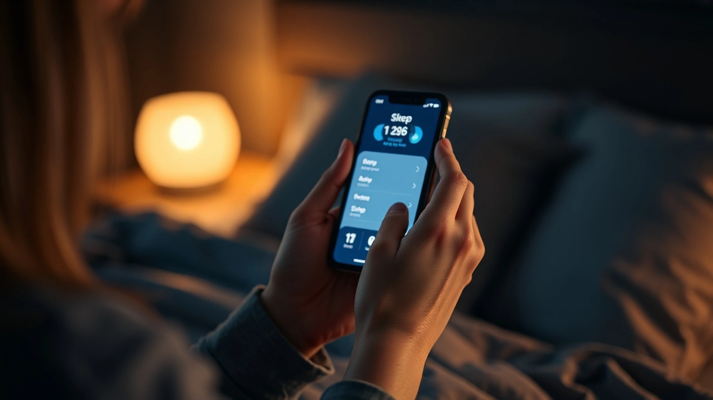

Why you feel tired all the time might have nothing to do with how long you sleep. Constant fatigue affects over 1.5 million Americans annually, and most never find the real cause.
Your body is sending signals that something needs to change, but you've been ignoring them for too long. Maybe you wake up exhausted, hit that afternoon slump hard, or feel drained by 3 PM no matter what.
The good news? This isn't permanent, and you're not broken. Small shifts in how you eat, move, and rest can transform your energy levels in as little as two weeks.
Why you feel tired all the time stems from poor sleep quality, nutrient deficiencies, chronic stress, and sedentary habits rather than just needing more hours in bed. Fixing constant fatigue requires addressing sleep hygiene, hydration, movement, and stress management together.
What Is Constant Fatigue and Why Does It Feel Different From Normal Tiredness?
Constant fatigue is not the same as being tired after a long day. Normal tiredness disappears after one good night of sleep, but chronic fatigue persists even when you rest.
Research shows that 26% of adults experience persistent fatigue lasting more than two weeks. This kind of exhaustion affects your mood, focus, immune system, and ability to enjoy life.
Start tracking your energy levels for one week. Write down when you feel most tired and what you did before that moment. You'll spot patterns you've been missing.
- Constant fatigue lingers after 8+ hours of sleep
- Normal tiredness improves with rest and good nutrition
- Chronic fatigue interferes with daily activities and relationships
- You might feel foggy, unmotivated, or physically weak
- Energy crashes happen unpredictably throughout the day
Your body doesn't crash without reason. Something in your lifestyle, diet, sleep quality, or stress levels is draining your reserves every single day.

What Are the Most Common Signs You're Dealing With Constant Fatigue?
Recognizing the signs of constant fatigue is the first step toward fixing it. Many people dismiss these symptoms as normal, but they're actually red flags asking for change.
Studies show that people experiencing persistent fatigue report difficulty concentrating (72%), mood changes (68%), and reduced motivation (81%). These aren't character flaws - they're symptoms of an exhausted system.
If you notice three or more of these signs, take action today. Don't wait for exhaustion to force you into a health crisis.
- Waking up tired even after 8 hours of sleep
- Hitting an energy crash between 2 and 4 PM
- Struggling to focus or remember things
- Feeling irritable, anxious, or emotionally flat
- Muscle aches or heaviness without exercise
- Catching every cold and flu that goes around
- Losing interest in hobbies you once loved
- Needing caffeine or sugar to function
Your body is smarter than you think. It's telling you that something in your routine needs to shift right now.
Why Does Constant Fatigue Happen Even After Sleeping 8 Hours?
Hours of sleep matter far less than the quality of that sleep. You can spend 8 hours in bed and wake up more tired than when you started.
The National Sleep Foundation found that 35% of Americans get poor quality sleep, even when spending adequate time in bed. Factors like blue light, stress, caffeine timing, and room temperature sabotage your rest.
Sleep quality depends on sleep cycles, not hours. Protect the last two hours before bed like your life depends on it, because your health actually does.
- Blue light from phones blocks melatonin production
- Caffeine consumed after 2 PM disrupts deep sleep
- Room temperature above 68 degrees prevents quality rest
- Stress and cortisol spikes keep you in light sleep
- Irregular sleep schedules confuse your circadian rhythm
- Poor sleep quality leaves you depleted even after long nights
You might also be dealing with hidden sleep disorders like sleep apnea or restless leg syndrome that prevent true restoration. A sleep tracking app can reveal if you're actually getting deep, restorative stages.
Read our detailed guide on how to sleep better naturally to transform your nighttime routine. The changes work fast.
What Nutrient Deficiencies Cause Constant Tiredness?
Your food directly powers your energy. Missing key nutrients creates an energy crisis that no amount of sleep can fix.
Studies show that iron deficiency causes fatigue in 9% of non-pregnant women and 1% of men. Vitamin B12, magnesium, and vitamin D deficiencies are equally common but rarely tested.
Get blood work done to check iron, B12, vitamin D, and magnesium levels. Most fatigue has a nutritional root that a doctor can identify.
- Iron deficiency: causes weakness, brain fog, and shortness of breath
- Vitamin B12 deficiency: leads to fatigue, numbness, and mood changes
- Vitamin D deficiency: linked to depression, weakness, and chronic pain
- Magnesium deficiency: creates muscle tension, sleep problems, and anxiety
- Dehydration: reduces oxygen flow and causes mental fatigue
- Skipping breakfast: drops blood sugar and energy by 10 AM
You don't need supplements to fix this. Strategic food choices work faster than pills.
Explore foods that reduce anxiety to learn which whole foods naturally restore energy and calm. Many of these same foods also fight constant fatigue.
How Do I Fix Constant Fatigue and Build Sustainable Energy Daily?
Fixing constant fatigue isn't about doing more. It's about cutting out what drains you and adding what restores you.
People who implement three or more energy-building habits report a 60% improvement in daily fatigue within four weeks. The key is consistency, not perfection.
Start with one change this week, add another next week. Small stacks of habits create lasting transformation.
- Set a non-negotiable bedtime and wake time, even on weekends
- Cut caffeine after 2 PM to protect sleep quality
- Drink half your body weight in ounces of water daily
- Move your body for 20 minutes before noon every day
- Eat protein within one hour of waking
- Turn off screens 60 minutes before bed
- Get sunlight exposure within the first hour of waking
- Reduce refined sugars that spike and crash your energy
The tired feeling you carry is reversible. Your body responds quickly to these changes.
Check out natural energy boosters that actually work. You'll discover proven tactics that don't rely on caffeine or sugar crashes.
What Daily Habits Actually Prevent Constant Fatigue Long-Term?
Prevention beats treatment every time. Building energy-sustaining habits now stops fatigue from stealing your life later.
Research on habit formation shows that people who track their habits and celebrate small wins stick with them 91% longer. Accountability matters more than willpower.
Pick one habit below and do it for 30 days straight, then add the next one. This approach creates lasting change instead of burnout.
- Morning sunlight exposure: 10 minutes outside by 8 AM resets your circadian rhythm
- Movement before noon: walking, stretching, or light strength work boosts mitochondrial energy
- Protein at breakfast: stabilizes blood sugar and prevents the 10 AM energy crash
- Hydration tracking: drink water before feeling thirsty to maintain oxygen flow
- Screen curfew: no devices 60 minutes before bed to protect melatonin
- Stress release ritual: 5 minutes of breathing, journaling, or walking daily lowers cortisol
- Weekly reflection: track energy levels and adjust what isn't working
Energy management is like budgeting money. You can't spend more than you have, and you can't build reserves without discipline.
Create a daily wellness habit practice that fits your lifestyle. Real habits stick because they feel good, not because you force them.
What Does This Look Like in Real Life?
Sarah, 34, was sleeping 9 hours a night but still felt like a zombie by noon. She blamed her job, her age, even her partner for keeping her awake. What she didn't realize was that she was scrolling her phone until midnight, drinking coffee at 4 PM out of habit, and skipping breakfast to save time. She was also chronically dehydrated and hadn't been outside during daylight in weeks because she worked from home.
In four weeks, Sarah made three changes: she stopped caffeine after 1 PM, moved her morning outside for 15 minutes with water, and ate eggs or Greek yogurt before checking email. Within 10 days, her afternoon crashes disappeared. Within three weeks, she woke up without an alarm feeling genuinely rested. She stopped being tired all the time not by sleeping more, but by sleeping better and respecting the small rituals her body had been begging for.
Related Articles
- → how to sleep better naturally
- → natural energy boosters
- → simple morning habits that transform your day
- → 7 Healthy Sleep Habits That Improve Energy and Transform Your Entire Day
- → 7 Best Foods for Focus and Concentration That Boost Your Brain Power
- → 5 Ways How Sleep Affects Mental Health: Transform Your Mind Tonight
Keep Reading
Frequently Asked Questions
Put this into practice today.
Our free ebook and habit tracker app were built to help you apply what you just read. No cost, no signup required.
Where to Go From Here
You don't have to live exhausted anymore. The fatigue you carry right now isn't your fault, but fixing it is your responsibility. Your body has been sending signals that something needs to change, and you finally heard them by reading this.
Start with one habit this week. Not all five. Not a complete overhaul. Just one small thing that feels possible: go to bed 30 minutes earlier, drink two glasses of water when you wake up, or spend 10 minutes outside before checking your phone.
The energy you want is waiting on the other side of small, consistent choices. You're closer to feeling alive again than you think.